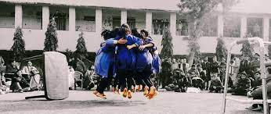

|  | All about NUKKAD 😊😍🙌 |
"The periphery refers to the circle of life, where each one has its major role that brings out an unending euphoria".
Nukkad Natak is not just a word, it is an emotion for thousands of students who worship this art form as divine is worshiped by humans.It contains a strong message for the community that aims to make people open mind and help them to grow socially and morally as well.
When talking about nukkad natak, it would be unfair not to talk about Delhi.The capital of the nation is also an adobe of street play events. No wonder why it is popular in Delhi.
The chief credit for the success of nukkad natak is Delhi College Theatre Circuit. DCTC with its members works for giving the memorable plays which last long in everyone’s heart.
You must have seen a bunch of similar kurtas with instruments and somewhat mysterious looking props in metros asking staff officers to carry odd things inside. When an individual joins the aura of nukkad natak in Delhi university, the series of craziness and puns automatically chases them.
“Are aaiye aaiye, natak dekhiye” on the beats of djembe, with cheerful faces and claps, nukkadwale invites you all to enjoy with them. Being a proud part of a street play society, I can tell you we are insane for what we do and this invents infinite crazy moments remembered a lifetime.
Our world, perfect amalgamation of discipline and craziness. So, let me introduce you to some of the crazy moments of nukkad natak in Delhi university.
As soon as I joined daily practice sessions, volume exercise was something very interesting. ‘pet se saas lo guys’, and I wondered how could you! Isn’t it crazy we get to know that ‘hmari breathing sahi nhi hai, one thing doing since childhood that to wrong! But yes, they were right, we need good practice for volume enhancement, the thumb rule for nukkad natak in Delhi university.
One of the craziest parts for every teammate is performing society’s call song accurately as it has the dignity of society. Understanding the song with the beats perfectly synced with energy matters the most. After all you have attracted the audience and make nukkad natak in Delhi University appealing.
That’s the most insane cum productive work I have ever done since childhood. It requires a huge brainstorming with physical drainage. This is the most challenging part of nukkad natak. But when you come out with flying colors, the insanity is all worth it.
Our team had the first slot at around 8.30 am. As it was far, it took me full 1 hour to reach and I thought no other would be energetic enough in so early winter morning. Surprise ( more than shock), the performing area was full power-packed. Everyone team was cheerful and that’s the craziness level of nukkad natak in Delhi University.
Nukkad natak in Delhi university’s fest season is beyond any benchmark of absolute craziness. One can travel to every corner of the city. From red line to blue line via yellow line for pink line, everything can happen when you are in the midst of the fest season. Performing back to back in separate nooks. But this gives rise to craziness which every nukkad natak troop in Delhi university proudly adorns.
Have you ever watched or been a part of the jamming session of nukkad natak? Dafli, djembe, guitar, dholak, xylophone, manjira, harmonium, clap box all unite in beautiful harmonies of nukkad songs that make you go mad. Every individual needs that kind of vibe in their life for sure!
Every nukkad natak team in Delhi University conducts its fest in a different yet traditional way. You have to have an insane mind and body to put up a great fest. From top to bottom, every member works all long for the fest. And the after-party scene is beyond any craziness.
Mood Indigo, the annual fest of IIT Bombay, is the world cup of nukkad natak. It gives the start of the fest season of nukkad natak in Delhi University. The craze to go Bombay with the team, meeting new people, having great fun, exploring the life of Bombay, the list seems to be quite long. Nukkad natak in Delhi university, without Mood-I madness is rather empty.
Yar tum street plays wale padhte kab ho? Question of a non-society member. The struggle is real when we go to mark your eca slip despite less than 33% attendance when we give internal with zero preparations. The heap of pending assignments having no idea what to do! Still wanting to opt nukkad natak in upcoming years, what will you call it craziness? Yes, we are crazy about it and we love our nukkad natak!
| Song | Society & College |
|---|---|
| Aziz-ul-Azeem | ANUBHUTI-SRI VENKATESHWARA COLLEGE |
| Darr Lage | RUDRA-PGDAV |
| Mann se Haarke | NATUVE-SBSC(M) |
| Aa Jaa Re | NATUVE-SBSC(M) |
| Tera Yeh Jahan | SHADES-KMV |
| Aayinei | LSR DRAMATIC SOCIETY |
| Dard-e-Sitam | KAHKASHA-JMC |
| Nindiya Aaja | ANUBHUTI-SRI VENKATESHWARA COLLEGE |
| Darpan | PRATIBIMB-DTU |
| Ulfato Se | AAYAM-MAIT |
| Sourabh Tu Phookta Nahi | PRATIBIMB-DTU |
| Meherbaani | PRATIBIMB-DTU |
| Pukarti Maa Bharti | KSHITIJ-GARGI |
| Jhoothi Duniyadaari | DRAMANOMICS-CVS |

Head of Music Production at PRATIBIMB-DRAMATICS AND FILM-MAKING SOCIETY OF DTU
I am an Electronics & Communication Engineering Student at Delhi Technological University
Being a part of Theatre since 3 years , I have experienced a lot of new and amazing things . I came as a Musician but
got the oppotunity to play so many different roles such as:-
ACTOR , MUSICIAN , WRITER , PERFORMER & MANAGEMENT.
Contact Details
|
|